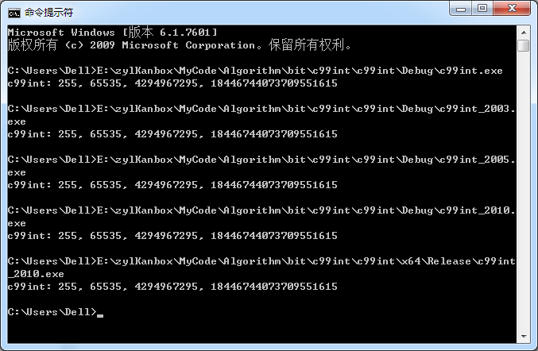

新版本——
http://www.cnblogs.com/zyl910/archive/2013/01/10/c99int_v101.html
[C] 让VC支持C99的整数类型V1.01。避免包含目录问题，更名auto_stdint.h、auto_inttypes.h（在VC6至VC2012、GCC、BCB等编译器下测试通过）
作者：zyl910
C99标准定义了stdint.h、inttypes.h，用于统一的跨平台数据定义。可惜VC、BCB等编译器对C99的兼容性较差，有些版本没有该头文件。本文对此进行探讨，编写了一套兼容VC、BCB、GCC的stdint.h、inttypes.h。
一、心得
1.1 检查
先检查一下各个编译器对stdint.h、inttypes.h的支持情况——
VC6：stdint.h、inttypes.h都没有。
VC2003：stdint.h、inttypes.h都没有。
VC2005：stdint.h、inttypes.h都没有。
VC2010：有stdint.h，没有inttypes.h。
BCB6：有stdint.h，没有inttypes.h。
GCC 4.7.0（Fedora 17）：stdint.h、inttypes均有。
GCC 4.6.2（MinGW (20120426)）：stdint.h、inttypes均有。
1.2 msinttypes
在网上搜索，发现了msinttypes，它提供了兼容VC的stdint.h、inttypes.h。地址是——
http://code.google.com/p/msinttypes/
msinttypes的安装方法——将压缩包中的stdint.h、inttypes.h放在VC的include目录。
我试用了一下，msinttypes基本上能解决问题，但觉得该方法有存在以下缺点——
1. 配置麻烦。如果安装了多个版本的VC，每个目录下都要复制一份stdint.h、inttypes.h。
2. VC版本区别。VC2010支持了stdint.h，是否还需要复制msinttypes的stdint.h呢？
3. 只支持VC平台。msinttypes的头文件用条件编译检查是不是VC编译器，不允许在其他编译器上编译。
4. 存在一些小Bug，例如——VC6不支持“I32”长度控制字符串、VC6编译C++程序时wchar.h会报错。
1.3 我的做法
我希望有这一套头文件——自动判断当前编译器是否支持C99标准的stdint.h、inttypes.h，如果支持就使用编译器的，否则使用自己来定义。
这套头文件叫什么名字呢？就叫stdint.h、inttypes.h。它们和程序源码放在一起，程序源码使用include引号方式包含这些头文件。而在这些头文件中，可以使用include尖括号方式包含系统的头文件。（注：include尖括号方式只搜索系统目录中的头文件。而include引号方式是优先搜索用户目录，找不到时再搜索系统目录。）
对于主程序来说，只需将“#include <stdint.h>”改为“#include "stdint.h"”就能使这些头文件生效了。而且就算用户目录下没有这些头文件（例如删除了），include引号方式就会使用系统目录中的stdint.h、inttypes.h，程序依然能成功编译。
至于判断当前编译器是否支持C99标准的stdint.h、inttypes.h。可以根据编译器的预定义宏来判断。
二、全部代码
stdint.h——

#ifndef _STDINT_H_ALL_ #define _STDINT_H_ALL_ // _STDINT_H_SYS_: 编译器是否提供了<stdint.h> #undef _STDINT_H_SYS_ #if defined(__GNUC__) // GCC. #define _STDINT_H_SYS_ #elif defined(_MSC_VER) // MSVC. VC6至VC2005均没有, 似乎从VC2010才支持的. #if _MSC_VER >=1600 // VC2010 #define _STDINT_H_SYS_ #endif // #if _MSC_VER >=1600 // VC2010 #elif defined(__BORLANDC__) // BCB. BCB6是支持的. #if __BORLANDC__ >=0x0560 // BCB6 #define _STDINT_H_SYS_ #endif // #if __BORLANDC__ >=0x0560 // BCB6 #else #define _INTTYPES_H_SYS_ // 假设其他编译器支持C99. #endif // _STDINT_H_SYS_ #ifdef _STDINT_H_SYS_ // 使用编译器提供的<stdint.h> #include <stdint.h> #else // 采用自定义的stdint.h. 参考了 msinttypes: http://code.google.com/p/msinttypes/ #ifndef _MSC_STDINT_H_ // [ #define _MSC_STDINT_H_ #include <limits.h> // For Visual Studio 6 in C++ mode and for many Visual Studio versions when // compiling for ARM we should wrap <wchar.h> include with 'extern "C++" {}' // or compiler give many errors like this: // error C2733: second C linkage of overloaded function 'wmemchr' not allowed //#ifdef __cplusplus //extern "C" { //#endif //# include <wchar.h> //#ifdef __cplusplus //} //#endif // 在VC6下测试时, 发现上面的方法会报告很多C2733错误. 还是直接include算了. #include <wchar.h> // Define _W64 macros to mark types changing their size, like intptr_t. #ifndef _W64 # if !defined(__midl) && (defined(_X86_) || defined(_M_IX86)) && _MSC_VER >= 1300 # define _W64 __w64 # else # define _W64 # endif #endif // 7.18.1 Integer types // 7.18.1.1 Exact-width integer types // Visual Studio 6 and Embedded Visual C++ 4 doesn't // realize that, e.g. char has the same size as __int8 // so we give up on __intX for them. #if (_MSC_VER < 1300) typedef signed char int8_t; typedef signed short int16_t; typedef signed int int32_t; typedef unsigned char uint8_t; typedef unsigned short uint16_t; typedef unsigned int uint32_t; #else typedef signed __int8 int8_t; typedef signed __int16 int16_t; typedef signed __int32 int32_t; typedef unsigned __int8 uint8_t; typedef unsigned __int16 uint16_t; typedef unsigned __int32 uint32_t; #endif typedef signed __int64 int64_t; typedef unsigned __int64 uint64_t; // 7.18.1.2 Minimum-width integer types typedef int8_t int_least8_t; typedef int16_t int_least16_t; typedef int32_t int_least32_t; typedef int64_t int_least64_t; typedef uint8_t uint_least8_t; typedef uint16_t uint_least16_t; typedef uint32_t uint_least32_t; typedef uint64_t uint_least64_t; // 7.18.1.3 Fastest minimum-width integer types typedef int8_t int_fast8_t; typedef int16_t int_fast16_t; typedef int32_t int_fast32_t; typedef int64_t int_fast64_t; typedef uint8_t uint_fast8_t; typedef uint16_t uint_fast16_t; typedef uint32_t uint_fast32_t; typedef uint64_t uint_fast64_t; // 7.18.1.4 Integer types capable of holding object pointers #ifdef _WIN64 // [ typedef signed __int64 intptr_t; typedef unsigned __int64 uintptr_t; #else // _WIN64 ][ typedef _W64 signed int intptr_t; typedef _W64 unsigned int uintptr_t; #endif // _WIN64 ] // 7.18.1.5 Greatest-width integer types typedef int64_t intmax_t; typedef uint64_t uintmax_t; // 7.18.2 Limits of specified-width integer types #if !defined(__cplusplus) || defined(__STDC_LIMIT_MACROS) // [ See footnote 220 at page 257 and footnote 221 at page 259 // 7.18.2.1 Limits of exact-width integer types #define INT8_MIN ((int8_t)_I8_MIN) #define INT8_MAX _I8_MAX #define INT16_MIN ((int16_t)_I16_MIN) #define INT16_MAX _I16_MAX #define INT32_MIN ((int32_t)_I32_MIN) #define INT32_MAX _I32_MAX #define INT64_MIN ((int64_t)_I64_MIN) #define INT64_MAX _I64_MAX #define UINT8_MAX _UI8_MAX #define UINT16_MAX _UI16_MAX #define UINT32_MAX _UI32_MAX #define UINT64_MAX _UI64_MAX // 7.18.2.2 Limits of minimum-width integer types #define INT_LEAST8_MIN INT8_MIN #define INT_LEAST8_MAX INT8_MAX #define INT_LEAST16_MIN INT16_MIN #define INT_LEAST16_MAX INT16_MAX #define INT_LEAST32_MIN INT32_MIN #define INT_LEAST32_MAX INT32_MAX #define INT_LEAST64_MIN INT64_MIN #define INT_LEAST64_MAX INT64_MAX #define UINT_LEAST8_MAX UINT8_MAX #define UINT_LEAST16_MAX UINT16_MAX #define UINT_LEAST32_MAX UINT32_MAX #define UINT_LEAST64_MAX UINT64_MAX // 7.18.2.3 Limits of fastest minimum-width integer types #define INT_FAST8_MIN INT8_MIN #define INT_FAST8_MAX INT8_MAX #define INT_FAST16_MIN INT16_MIN #define INT_FAST16_MAX INT16_MAX #define INT_FAST32_MIN INT32_MIN #define INT_FAST32_MAX INT32_MAX #define INT_FAST64_MIN INT64_MIN #define INT_FAST64_MAX INT64_MAX #define UINT_FAST8_MAX UINT8_MAX #define UINT_FAST16_MAX UINT16_MAX #define UINT_FAST32_MAX UINT32_MAX #define UINT_FAST64_MAX UINT64_MAX // 7.18.2.4 Limits of integer types capable of holding object pointers #ifdef _WIN64 // [ # define INTPTR_MIN INT64_MIN # define INTPTR_MAX INT64_MAX # define UINTPTR_MAX UINT64_MAX #else // _WIN64 ][ # define INTPTR_MIN INT32_MIN # define INTPTR_MAX INT32_MAX # define UINTPTR_MAX UINT32_MAX #endif // _WIN64 ] // 7.18.2.5 Limits of greatest-width integer types #define INTMAX_MIN INT64_MIN #define INTMAX_MAX INT64_MAX #define UINTMAX_MAX UINT64_MAX // 7.18.3 Limits of other integer types #ifdef _WIN64 // [ # define PTRDIFF_MIN _I64_MIN # define PTRDIFF_MAX _I64_MAX #else // _WIN64 ][ # define PTRDIFF_MIN _I32_MIN # define PTRDIFF_MAX _I32_MAX #endif // _WIN64 ] #define SIG_ATOMIC_MIN INT_MIN #define SIG_ATOMIC_MAX INT_MAX #ifndef SIZE_MAX // [ # ifdef _WIN64 // [ # define SIZE_MAX _UI64_MAX # else // _WIN64 ][ # define SIZE_MAX _UI32_MAX # endif // _WIN64 ] #endif // SIZE_MAX ] // WCHAR_MIN and WCHAR_MAX are also defined in <wchar.h> #ifndef WCHAR_MIN // [ # define WCHAR_MIN 0 #endif // WCHAR_MIN ] #ifndef WCHAR_MAX // [ # define WCHAR_MAX _UI16_MAX #endif // WCHAR_MAX ] #define WINT_MIN 0 #define WINT_MAX _UI16_MAX #endif // __STDC_LIMIT_MACROS ] // 7.18.4 Limits of other integer types #if !defined(__cplusplus) || defined(__STDC_CONSTANT_MACROS) // [ See footnote 224 at page 260 // 7.18.4.1 Macros for minimum-width integer constants #define INT8_C(val) val##i8 #define INT16_C(val) val##i16 #define INT32_C(val) val##i32 #define INT64_C(val) val##i64 #define UINT8_C(val) val##ui8 #define UINT16_C(val) val##ui16 #define UINT32_C(val) val##ui32 #define UINT64_C(val) val##ui64 // 7.18.4.2 Macros for greatest-width integer constants #define INTMAX_C INT64_C #define UINTMAX_C UINT64_C #endif // __STDC_CONSTANT_MACROS ] #endif // _MSC_STDINT_H_ ] #endif // #ifdef _STDINT_H_SYS_ #endif // #ifndef _STDINT_H_ALL_
inttypes.h——
#ifndef _INTTYPES_H_ALL_ #define _INTTYPES_H_ALL_ // _INTTYPES_H_SYS_: 编译器是否提供了<inttypes.h> #undef _INTTYPES_H_SYS_ #if defined(__GNUC__) // GCC. #define _INTTYPES_H_SYS_ #elif defined(_MSC_VER) // MSVC. VC2010仍不支持. #elif defined(__BORLANDC__) // BCB. BCB6仍不支持. #else #define _INTTYPES_H_SYS_ // 假设其他编译器支持C99. #endif // _INTTYPES_H_SYS_ #ifdef _INTTYPES_H_SYS_ // 使用编译器提供的<inttypes.h> #include <inttypes.h> #else // 采用自定义的inttypes.h. 参考了 msinttypes: http://code.google.com/p/msinttypes/ #ifndef _MSC_INTTYPES_H_ // [ #define _MSC_INTTYPES_H_ #include "stdint.h" // 7.8 Format conversion of integer types typedef struct { intmax_t quot; intmax_t rem; } imaxdiv_t; // 7.8.1 Macros for format specifiers #if !defined(__cplusplus) || defined(__STDC_FORMAT_MACROS) // [ See footnote 185 at page 198 // The fprintf macros for signed integers are: #define PRId8 "d" #define PRIi8 "i" #define PRIdLEAST8 "d" #define PRIiLEAST8 "i" #define PRIdFAST8 "d" #define PRIiFAST8 "i" #define PRId16 "hd" #define PRIi16 "hi" #define PRIdLEAST16 "hd" #define PRIiLEAST16 "hi" #define PRIdFAST16 "hd" #define PRIiFAST16 "hi" #if defined(_MSC_VER) && _MSC_VER<=1200 // VC6 #define PRId32 "d" #define PRIi32 "i" #define PRIdLEAST32 "d" #define PRIiLEAST32 "i" #define PRIdFAST32 "d" #define PRIiFAST32 "i" #else #define PRId32 "I32d" #define PRIi32 "I32i" #define PRIdLEAST32 "I32d" #define PRIiLEAST32 "I32i" #define PRIdFAST32 "I32d" #define PRIiFAST32 "I32i" #endif #define PRId64 "I64d" #define PRIi64 "I64i" #define PRIdLEAST64 "I64d" #define PRIiLEAST64 "I64i" #define PRIdFAST64 "I64d" #define PRIiFAST64 "I64i" #define PRIdMAX "I64d" #define PRIiMAX "I64i" #define PRIdPTR "Id" #define PRIiPTR "Ii" // The fprintf macros for unsigned integers are: #define PRIo8 "o" #define PRIu8 "u" #define PRIx8 "x" #define PRIX8 "X" #define PRIoLEAST8 "o" #define PRIuLEAST8 "u" #define PRIxLEAST8 "x" #define PRIXLEAST8 "X" #define PRIoFAST8 "o" #define PRIuFAST8 "u" #define PRIxFAST8 "x" #define PRIXFAST8 "X" #define PRIo16 "ho" #define PRIu16 "hu" #define PRIx16 "hx" #define PRIX16 "hX" #define PRIoLEAST16 "ho" #define PRIuLEAST16 "hu" #define PRIxLEAST16 "hx" #define PRIXLEAST16 "hX" #define PRIoFAST16 "ho" #define PRIuFAST16 "hu" #define PRIxFAST16 "hx" #define PRIXFAST16 "hX" #if defined(_MSC_VER) && _MSC_VER<=1200 // VC6 #define PRIo32 "o" #define PRIu32 "u" #define PRIx32 "x" #define PRIX32 "X" #define PRIoLEAST32 "o" #define PRIuLEAST32 "u" #define PRIxLEAST32 "x" #define PRIXLEAST32 "X" #define PRIoFAST32 "o" #define PRIuFAST32 "u" #define PRIxFAST32 "x" #define PRIXFAST32 "X" #else #define PRIo32 "I32o" #define PRIu32 "I32u" #define PRIx32 "I32x" #define PRIX32 "I32X" #define PRIoLEAST32 "I32o" #define PRIuLEAST32 "I32u" #define PRIxLEAST32 "I32x" #define PRIXLEAST32 "I32X" #define PRIoFAST32 "I32o" #define PRIuFAST32 "I32u" #define PRIxFAST32 "I32x" #define PRIXFAST32 "I32X" #endif #define PRIo64 "I64o" #define PRIu64 "I64u" #define PRIx64 "I64x" #define PRIX64 "I64X" #define PRIoLEAST64 "I64o" #define PRIuLEAST64 "I64u" #define PRIxLEAST64 "I64x" #define PRIXLEAST64 "I64X" #define PRIoFAST64 "I64o" #define PRIuFAST64 "I64u" #define PRIxFAST64 "I64x" #define PRIXFAST64 "I64X" #define PRIoMAX "I64o" #define PRIuMAX "I64u" #define PRIxMAX "I64x" #define PRIXMAX "I64X" #define PRIoPTR "Io" #define PRIuPTR "Iu" #define PRIxPTR "Ix" #define PRIXPTR "IX" // The fscanf macros for signed integers are: #define SCNd8 "d" #define SCNi8 "i" #define SCNdLEAST8 "d" #define SCNiLEAST8 "i" #define SCNdFAST8 "d" #define SCNiFAST8 "i" #define SCNd16 "hd" #define SCNi16 "hi" #define SCNdLEAST16 "hd" #define SCNiLEAST16 "hi" #define SCNdFAST16 "hd" #define SCNiFAST16 "hi" #define SCNd32 "ld" #define SCNi32 "li" #define SCNdLEAST32 "ld" #define SCNiLEAST32 "li" #define SCNdFAST32 "ld" #define SCNiFAST32 "li" #define SCNd64 "I64d" #define SCNi64 "I64i" #define SCNdLEAST64 "I64d" #define SCNiLEAST64 "I64i" #define SCNdFAST64 "I64d" #define SCNiFAST64 "I64i" #define SCNdMAX "I64d" #define SCNiMAX "I64i" #ifdef _WIN64 // [ # define SCNdPTR "I64d" # define SCNiPTR "I64i" #else // _WIN64 ][ # define SCNdPTR "ld" # define SCNiPTR "li" #endif // _WIN64 ] // The fscanf macros for unsigned integers are: #define SCNo8 "o" #define SCNu8 "u" #define SCNx8 "x" #define SCNX8 "X" #define SCNoLEAST8 "o" #define SCNuLEAST8 "u" #define SCNxLEAST8 "x" #define SCNXLEAST8 "X" #define SCNoFAST8 "o" #define SCNuFAST8 "u" #define SCNxFAST8 "x" #define SCNXFAST8 "X" #define SCNo16 "ho" #define SCNu16 "hu" #define SCNx16 "hx" #define SCNX16 "hX" #define SCNoLEAST16 "ho" #define SCNuLEAST16 "hu" #define SCNxLEAST16 "hx" #define SCNXLEAST16 "hX" #define SCNoFAST16 "ho" #define SCNuFAST16 "hu" #define SCNxFAST16 "hx" #define SCNXFAST16 "hX" #define SCNo32 "lo" #define SCNu32 "lu" #define SCNx32 "lx" #define SCNX32 "lX" #define SCNoLEAST32 "lo" #define SCNuLEAST32 "lu" #define SCNxLEAST32 "lx" #define SCNXLEAST32 "lX" #define SCNoFAST32 "lo" #define SCNuFAST32 "lu" #define SCNxFAST32 "lx" #define SCNXFAST32 "lX" #define SCNo64 "I64o" #define SCNu64 "I64u" #define SCNx64 "I64x" #define SCNX64 "I64X" #define SCNoLEAST64 "I64o" #define SCNuLEAST64 "I64u" #define SCNxLEAST64 "I64x" #define SCNXLEAST64 "I64X" #define SCNoFAST64 "I64o" #define SCNuFAST64 "I64u" #define SCNxFAST64 "I64x" #define SCNXFAST64 "I64X" #define SCNoMAX "I64o" #define SCNuMAX "I64u" #define SCNxMAX "I64x" #define SCNXMAX "I64X" #ifdef _WIN64 // [ # define SCNoPTR "I64o" # define SCNuPTR "I64u" # define SCNxPTR "I64x" # define SCNXPTR "I64X" #else // _WIN64 ][ # define SCNoPTR "lo" # define SCNuPTR "lu" # define SCNxPTR "lx" # define SCNXPTR "lX" #endif // _WIN64 ] #endif // __STDC_FORMAT_MACROS ] // 7.8.2 Functions for greatest-width integer types // 7.8.2.1 The imaxabs function #define imaxabs _abs64 // 7.8.2.2 The imaxdiv function #ifdef _MSC_VER // This is modified version of div() function from Microsoft's div.c found // in %MSVC.NET%\crt\src\div.c #ifdef STATIC_IMAXDIV // [ static #else // STATIC_IMAXDIV ][ _inline #endif // STATIC_IMAXDIV ] imaxdiv_t __cdecl imaxdiv(intmax_t numer, intmax_t denom) { imaxdiv_t result; result.quot = numer / denom; result.rem = numer % denom; if (numer < 0 && result.rem > 0) { // did division wrong; must fix up ++result.quot; result.rem -= denom; } return result; } #endif // #ifdef _MSC_VER // 7.8.2.3 The strtoimax and strtoumax functions #define strtoimax _strtoi64 #define strtoumax _strtoui64 // 7.8.2.4 The wcstoimax and wcstoumax functions #define wcstoimax _wcstoi64 #define wcstoumax _wcstoui64 #endif // _MSC_INTTYPES_H_ ] #endif // #ifdef _INTTYPES_H_SYS_ #endif // #ifndef _INTTYPES_H_ALL_
测试代码：c99int.c——
#define __STDC_LIMIT_MACROS #define __STDC_CONSTANT_MACROS #define __STDC_FORMAT_MACROS #include <stdio.h> #include <wchar.h> #include "stdint.h" #include "inttypes.h" int main(int argc, char* argv[]) { uint8_t i8 = (uint8_t)INT8_C(-1); uint16_t i16 = (uint16_t)INT16_C(-1); uint32_t i32 = (uint32_t)INT32_C(-1); uint64_t i64 = (uint64_t)INT64_C(-1); printf("c99int:\t%" PRIu8 ", %" PRIu16 ", %" PRIu32 ", %" PRIu64 "\n", i8, i16, i32, i64); return 0; }
三、测试结果
在以下编译器中成功编译——
VC6
VC2003
VC2005
VC2010（x86与x64）
BCB6
GCC 4.7.0（Fedora 17）
GCC 4.6.2（MinGW (20120426)）

参考文献——
《ISO/IEC 9899:1999 (C99)》。ISO/IEC，1999。www.open-std.org/jtc1/sc22/wg14/www/docs/n1124.pdf
《C99标准》。yourtommy。http://blog.csdn.net/yourtommy/article/details/7495033
msinttypes-r26. http://code.google.com/p/msinttypes/
《VC 里边怎么用C99》. http://hi.baidu.com/419836321/blog/item/bf643830976204b15edf0e3a.html
《[C/C++] 显示各种C/C++编译器的预定义宏（C11标准、C++11标准、VC、BCB、Intel、GCC）》. http://www.cnblogs.com/zyl910/archive/2012/08/02/printmacro.html


【推荐】阿里云云大使特惠：新用户购ECS服务器1核2G最低价87元/年
【推荐】大型组态、工控、仿真、CAD\GIS 50万行VC++源码免费下载!
【推广】园子与爱卡汽车爱宝险合作，随手就可以买一份的百万医疗保险
· CSS 奇思妙想 | 使用 resize 实现强大的图片拖拽切换预览功能
· 浅谈 C# 取消令牌 CancellationTokenSource
· 记一次 .NET 某WMS仓储打单系统 内存暴涨分析
· 神奇的 SQL 之别样的写法 —— 行行比较
· C# 10 完整特性介绍
· 新能源车企们的“自动驾驶”，究竟有多危险？
· iQOO 8 Pro 评测：六边形战士再度进化，还有一触即发的超大指纹
· 王兴的社交梦，饭小圈撑不起
· 奔四的听障码农，被开除15次面试被拒200+次，还要继续干下去吗？
· 知名女VC上课中途晕倒去世 培训方诚泉文化有何玄机？
» 更多新闻...